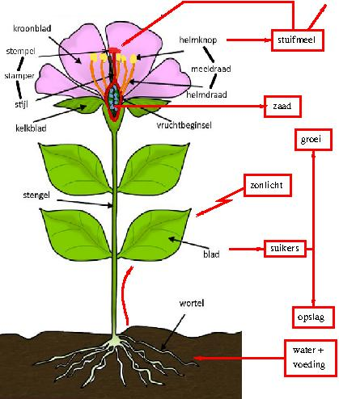

De plant
|

|
|
Een plant heeft wortels, een stengel,
bladeren en (soms) bloemen.
De wortels zitten onder de grond.
Ze nemen water en voedsel op.
Door de stengel gaat het water met de voedingsstoffen naar de bladeren.
In het blad wordt dit met zonlicht omgezet in suikers.
|
De suikers worden door de stengel afgevoerd.
Ze zijn nodig voor het groeien van de plant.
Ook kunnen ze worden opgeslagen als reservevoedsel
of meegegeven aan het zaad.
Als een plant bloeit, heeft ze een of meer bloemen.
Een bloem heeft kelkbladen en kroonbladen,
die vaak een mooie vorm en kleur hebben.
De bloem heeft ook meeldraden en een stamper.
De meeldraden maken stuifmeel.
Het stuifmeel wordt verspreid door de wind of door insecten.
Als stuifmeel op de stamper komt, ontstaat er zaad.
Dat zaad wordt verspreid door de wind of door dieren.
Uit het zaad kan een nieuw plantje ontkiemen.
-
Wat gebeurt er als een plant te weinig water krijgt?
-
Welke voedingsstoffen heeft een plant nodig?
-
In welke vorm worden de suikers opgeslagen?
Waar worden ze opgeslagen?
-
Welke planten eten we?
Wat eten we van die planten?
-
Wat is hooikoorts?